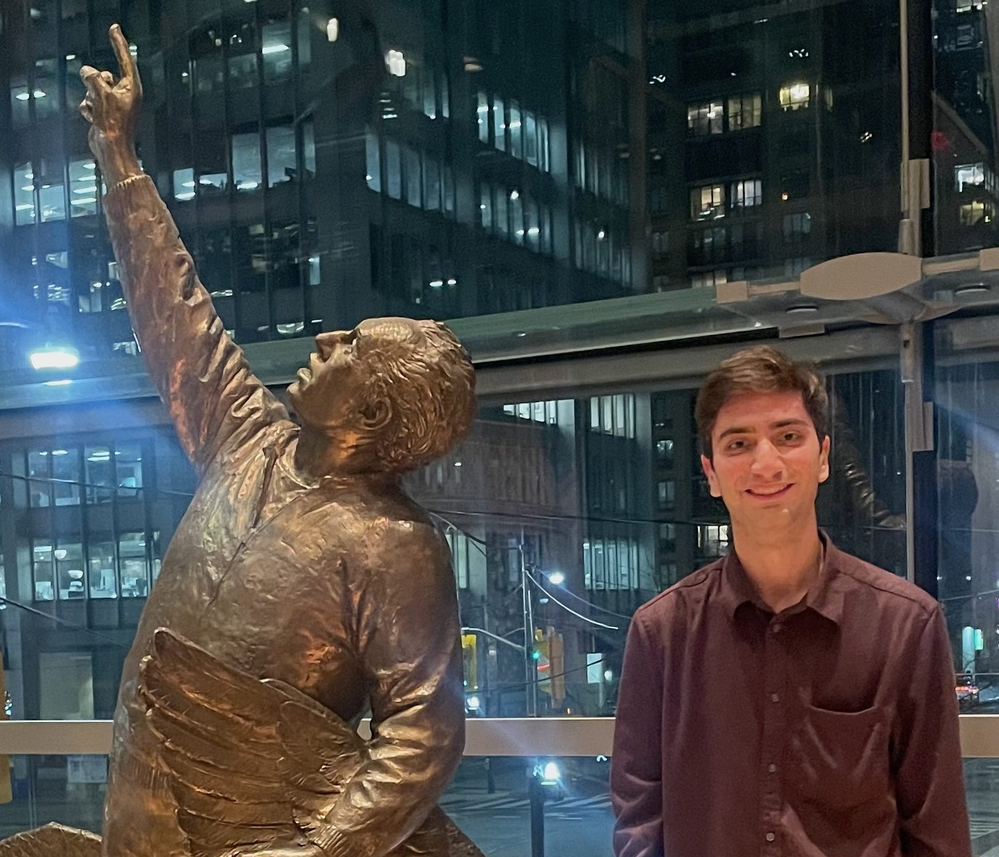

|  | Ph.D. Student, |
I am a computer science Ph.D. student at the University of Toronto and Vector Institute, advised by Murat A. Erdogdu. Before that, I received my B.Sc. in computer engineering from Sharif University of Technology. During Fall 2023, I visited Lénaïc Chizat at the EPFL Institute of Mathematics. During Summer 2025, I interned at Apple ML Research with Marco Cuturi.
I am broadly interested in developing principled foundations for deep learning, both by better understanding current algorithms and by discovering new ones. At the moment, I am focusing on
Deep Learning Theory: Provable comparisons between different architectures and training algorithms in terms of their statistical and computational efficiency.
Generative Modeling: Analysis of flow models and diffusions for generative modeling and non-log-concave sampling.
Flow Matching with Semidiscrete Couplings.
Alireza Mousavi-Hosseini*, Stephen Y. Zhang*, Michal Klein, Marco Cuturi.
Preprint, 2025.
On Fitting Flow Models with Large Sinkhorn Couplings.
Stephen Y. Zhang*, Alireza Mousavi-Hosseini*, Michal Klein, Marco Cuturi.
Preprint, 2025.
When Do Transformers Outperform Feedforward and Recurrent Networks? A Statistical Perspective.
Alireza Mousavi-Hosseini, Clayton Sanford, Denny Wu, Murat A. Erdogdu.
To appear in NeurIPS 2025, Advances in Neural Information Processing Systems.
Oral Presentation, ICML workshop on High-Dimensional Learning Dynamics, 2025.
From Information to Generative Exponent: Learning Rate Induces Phase Transitions in SGD
KC Tsiolis, Alireza Mousavi-Hosseini, Murat A. Erdogdu.
To appear in NeurIPS 2025, Advances in Neural Information Processing Systems.
Robust Feature Learning for Multi-Index Models in High Dimensions.
Alireza Mousavi-Hosseini, Adel Javanmard, Murat A. Erdogdu.
ICLR 2025, International Conference on Learning Representations.
Learning Multi-Index Models with Neural Networks via Mean-Field Langevin Dynamics.
Alireza Mousavi-Hosseini, Denny Wu, Murat A. Erdogdu.
ICLR 2025, International Conference on Learning Representations.
Mean-Field Langevin Dynamics for Signed Measures via a Bilevel Approach.
Guillaume Wang*, Alireza Mousavi-Hosseini*, Lénaïc Chizat.
NeurIPS 2024, Advances in Neural Information Processing Systems. (Spotlight)
A Separation in Heavy-Tailed Sampling: Gaussian vs. Stable Oracles for Proximal Samplers.
Ye He, Alireza Mousavi-Hosseini, Krishnakumar Balasubramanian, Murat A. Erdogdu.
NeurIPS 2024, Advances in Neural Information Processing Systems.
Gradient-Based Feature Learning under Structured Data.
Alireza Mousavi-Hosseini, Denny Wu, Taiji Suzuki, Murat A. Erdogdu.
NeurIPS 2023, Advances in Neural Information Processing Systems.
Towards a Complete Analysis of Langevin Monte Carlo: Beyond Poincaré Inequality.
Alireza Mousavi-Hosseini*, Tyler Farghly*, Ye He, Krishnakumar Balasubramanian, Murat A. Erdogdu.
COLT 2023, Annual Conference on Learning Theory.
Neural Networks Efficiently Learn Low-Dimensional Representations with SGD.
Alireza Mousavi-Hosseini, Sejun Park, Manuela Girotti, Ioannis Mitliagkas, Murat A. Erdogdu.
ICLR 2023, International Conference on Learning Representations. (Spotlight)
* Equal Contributions
Toronto is a pretty cool city if you're interested in the performing arts in general, and musical theatre in particular.
UofT has an amazing theatre: Hart House Theatre